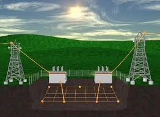
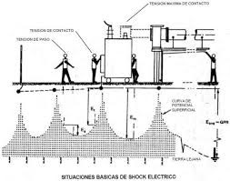

3.4 RED DE TIERRA
Se puede designar con el nombre de sistemas de tierra, al conjunto de cables desnudos instalados en forma subterránea que se interconectan entre sí por medio de conectores y electrodos, y que junto con la tierra circundante provoca la dispersión de las corrientes de cortocircuito, sin permitir que dentro de la instalación eléctrica se presenten voltajes de magnitud peligrosa para el personal que labora en la zona.
A la red de tierra se deben conectar: los neutros de los transformadores, los pararrayos, la red aérea de hilos de guarda que protegen la subestación de los rayos directos, las estructuras metálicas, tanques, y en general, todas las partes metálicas de la instalación que deben estar al potencial de tierra.
Elementos de una Red de Tierra:
Los elementos que componen una red de tierra son los siguientes...
- Conductores: Los conductores utilizados en la red de tierra son de cable de cobre de calibre superior al de 4/0 AWG, dependiendo del tipo de red que se utilice. Se escoge el calibre mínimo de 4/0 en cobre, por razones mecánicas, ya que eléctricamente pueden usarse cables hasta del número 2 AWG. Se utiliza cobre por tener mejor conductividad y sobre todo por su resistencia a casi todos los tipos de corrosión, debido a que es catódico con respecto a la mayor parte de los metales.
- Conectores: Son los elementos que sirven para conectar a los cables de tierra los electrodos profundos, las estructuras, los neutros de los bancos de transformadores, la red aérea de hilos de guarda, etc. Los conectores utilizados son de tres tipos y deben poder soportar la corriente máxima de la tierra sin fundirse...
- Conectores Atornillados: Están formados por dos piezas de bronce que se unen por medio de tornillos de bronce al silicio, los cuales proporcionan alta resistencia mecánica y a la corrosión. Soportan temperaturas máximas de 250°C.
- Conectores a Presión: Estos conectores a presión están formados por una pieza metálica hueca, en cuyos extremos se introducen las dos puntas del cable que se va a empalmar. Y mediante una prensa hidráulica, con dados intercambiables, según los calibres de los conductores, se produce la unión al comprimirse el material citado. Estas conexiones soportan temperaturas máximas de 350°C. Estos conectores son más económicos que los atornillados.
- Conectores Soldados: Los conectores soldados (tipo “cadweld”) requieren de moldes de grafito de diferentes calibres, en donde por medio de la combustión de cargas especiales se producen temperaturas muy altas, se funden las puntas terminales del cable que se va a soldar produciendo una unión que soporta la temperatura de fusión del conductor. Estos conectores son económicos y seguros; asimismo, soportan temperaturas de 250°C en forma continua.
- Electrodos: Son los tubos de hierro galvanizado o varillas que se clavan en el terreno donde se instala la red de tierra y que sirven para incrementar la longitud total de la misma en terrenos pequeños, o para encontrar zonas más húmedas en terrenos secos y sin vegetación, expuestos al sol. Los tubos de hierro galvanizado son más económicos, pero su uso se restringe a terrenos cuya constitución química no ataque a dicho material.
En terrenos con constituyentes más corrosivos se utilizan varillas de hierro enfundados en una envolvente de lámina de cobre perfectamente adherida al metal base. Este material combina las ventajas de la alta conductividad y baja corrosión del cobre con la alta resistencia mecánica del hierro. Estas varillas son de unos 3 metros de largo, se clavan en el terreno y se conectan a la red de cable de cobre a través de los conectores electrodo-cable correspondientes.
- Electrodos en Concreto: Las cimentaciones y estructuras de concreto enterradas, permanecen húmedas debido a que el concreto es hidroscópico, produciendo una conductividad interna entre 25 y 40 ohm-metro. Estas estructuras cuando se constituyen en terrenos con resistividades entre media y alta, provocan que parte de la corriente de tierra se derive a través de las varillas o electrodos colados dentro del concreto, los cuales presentan un camino de menor resistencia que la red de tierra en sí.
